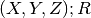
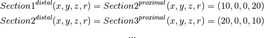
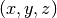

Morphology Layer
Overview
Dual-Represention of morphologies
In morphforge, as in many other tools, morphologies are represented as a tree of joined conical frustra (cylinders with different radii ends).

Figure 1A shows a projection of an original neuron morphology, In figure 1B, the morphology is approximated as a set of conical frustra. At every joining point of multiple frustra, the radii are the same.
- There are 2 ways of considering these sets of frustra:
- TreeBased: As a tree of Sections (Figure 1C).
- VertexBased: As a set of vertices and a set of connections between them.
Underneath, these two representations contain the same information, but the different object model representations have strengths for different tasks. In morphforge, they are represented as two different classes: MorphologyTree and MorphologyArray.
- TreeBased: (MorphologyTree ) is arguably more intuitive to read. It is also what the morphforge.simulation layer handles.
- VertexBased: (MorphologyArray ) is more efficient in speed & memory size for large morphologies.
For more information about the representations, see the documentation for the submodules tree and array
Converting between representations
In general, you will only need to use one of the two representations, depending on what your are doing. However, MorphologyTree and MorphologyArray objects can be converted to each type using the methods “to_array()” and “to_tree()”.
# Load a MorphArray object and convert
# it to MorphTree object
morph_array = MorphArray.fromSWC(...)
morph_tree = morph_array.to_array()
# Vice-Versa
morph_tree2 = MorphTree.fromSWC(...)
morph_array = morph_tree2.to_array()
# Trying to convert an object to its own
# type returns the original object:
morph_tree3 = morph_tree2.to_tree()
assert morph_tree3 is morphtree2
Tree-Based
In the tree based representation, a morphology is considered as a set of Section. A Section is an unbranching length neurons, which can be connected to other sections at its end points. If it does connect to other sections at the end points, then it shares the same position and radius information at that point.
For example, Figure 1 shows a morphology composed of 4 sections. Each end of each frustra is specified as a point in 3D space and a radius: . However, since positions and radii are shared, at join points, only stores a reference to its parent (orange arrow), and its distal coordinate (red dots). Therefore

Some care need to be taken around the start of the tree. In order for Section1 to have some length, We introduce a special Section, with no parent (and hence no length), called the Dummy-Section, shown as a blue dot. This section is just used for its position & radius coordinate; it does not represent any volume or surface area.
The dummy section is always the root of the tree. Sections whose parents are the Dummy-Section, are ‘Root’ sections. (shown in light green). This means that there can be many root nodes in a tree, for example:

Note
There is an assumption that the root nodes in the models are found made at the somata of cells. The terms ‘Proxmial’ and ‘Distal’ on Section objects refer to the ends closest and furthest away from the dummyroot section respectively.
Note
This object model is heavily based on the .swc file format. DummyNode correspond to lines in the .swc format with a parent ID of -1.
To construct the morphology in the top figure; the code would look like:
askjdls
asljf
Todo
This is not the way morphologies are recommended to be built. It may be more convenient to use the ‘DictionaryLoader’
Regions provide a way to group sections together, for example as ‘axon’, ‘soma’. Each Section in a morphology can optionally be assigned to a single Region. Regions are used by the morphforge.simulation layer for specifying channel distributions over a morphology.
Note
This way of specifying Regions is very similar to the ‘type’ field in the .swc file format.
Each Section can be assigned an ‘ID-Tag’. This is simply a string that can be used to refer to a particular section easily later. An IDTag can not be repeated in a morphology. For example, when constructing a morphology, we might tag the main soma section, so that is it simple to add current clamps for exampl in simulations.
Todo
Reference some example.
Todo
MorphLocations and MorphPaths
“”“
Vertex-Based
“”“Vertex-based object-model of morphologies.
In this scheme, each node has a position , and a radius denoted by the green line. Each node, except one, has a single parent.